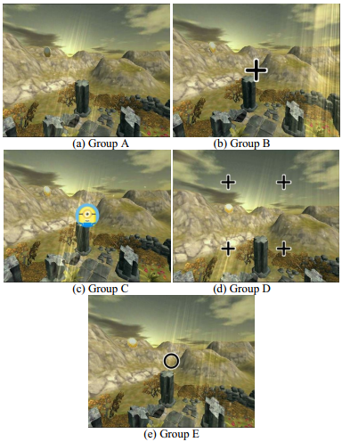

Reduce Simulator Sickness by Overwritten Symbol in Smartphone-Based VR System


Venue. ICVRV (2016)
Abstract. The aim of this paper is to reduce simulator sickness caused by the low refresh rate of display in smartphone-based VR system. Without regard to the improvement of hardware, the method proposed in this paper reduces simulator sickness by adding static symbol on the screen of the smartphone. A series of user-participation experiments were done to validate the effectiveness of the method. Participants' responses to the symbol with different textures (cross or Minion logo) and in different positions (the center or near the corners) were assessed by Simulator Sickness Questionnaire (SSQ). The preliminary results demonstrate that the existence, the position and complexity of the symbols can be factors in relieving symptoms of simulator sickness.
Link to this page: